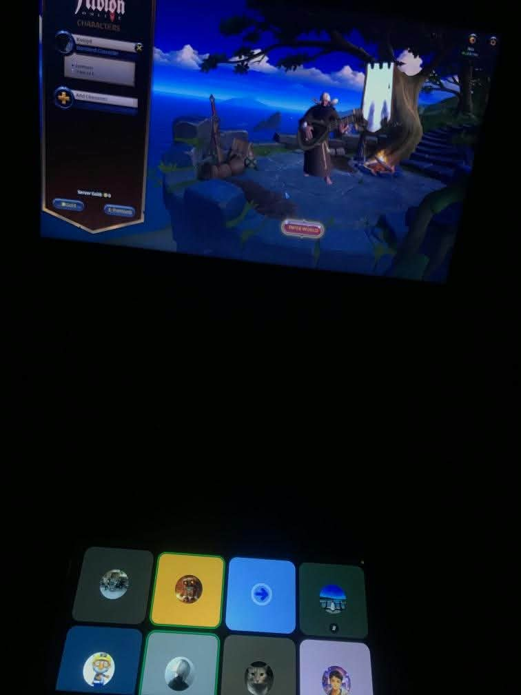

My Hobbies
Here are some of the activities I enjoy doing during my free time.

Gaming
I enjoy playing video games because they help me relax, have fun, and temporarily escape from the stress of everyday life. Gaming also allows me to connect and interact with other people, especially my friends. It helps me improve my teamwork, decision-making, and problem-solving skills while enjoying my free time.
Stroll/Gala
I enjoy going out, strolling, and spending time with my friends because it helps me relax and clear my mind. Whether we are simply walking around, exploring different places, or sharing conversations, these moments allow me to unwind and forget my problems, even for a short time. It also gives me a chance to create memorable experiences and strengthen my friendships.
Going to the gym
I enjoy going to the gym whenever I have free time because it helps me improve my physical and mental health, strength, and overall fitness. Working out allows me to challenge myself, stay disciplined, and work toward my personal goals. Aside from improving my body, going to the gym also helps me relieve stress, boost my confidence, and maintain a healthier lifestyle.